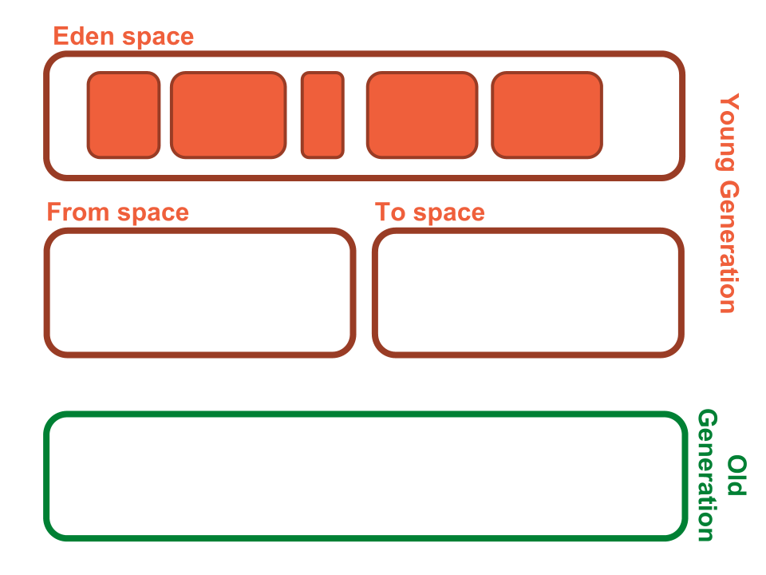
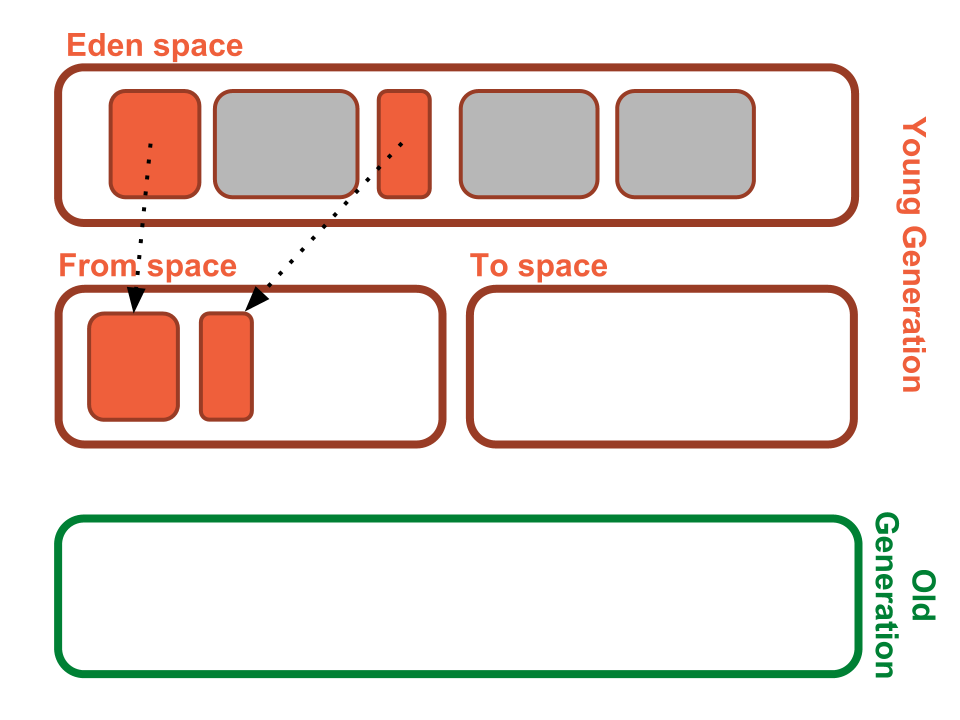
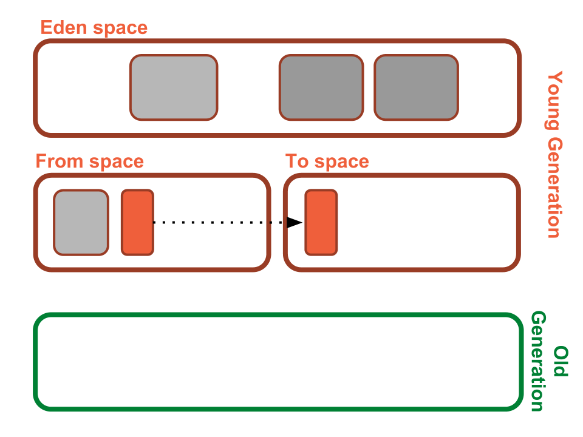
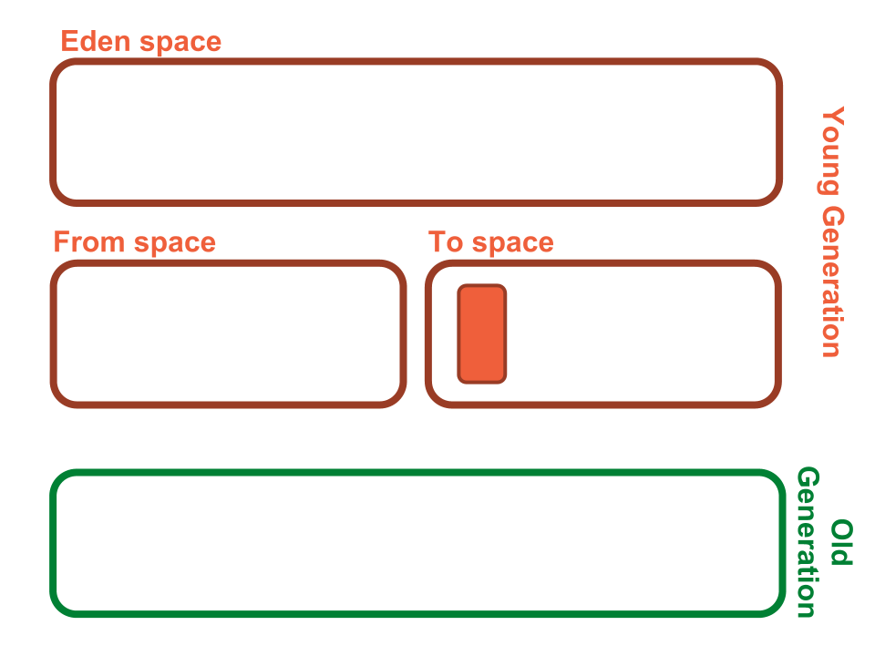
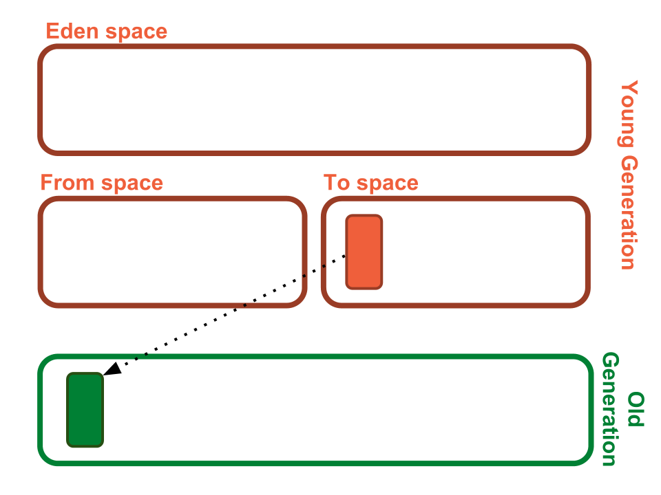
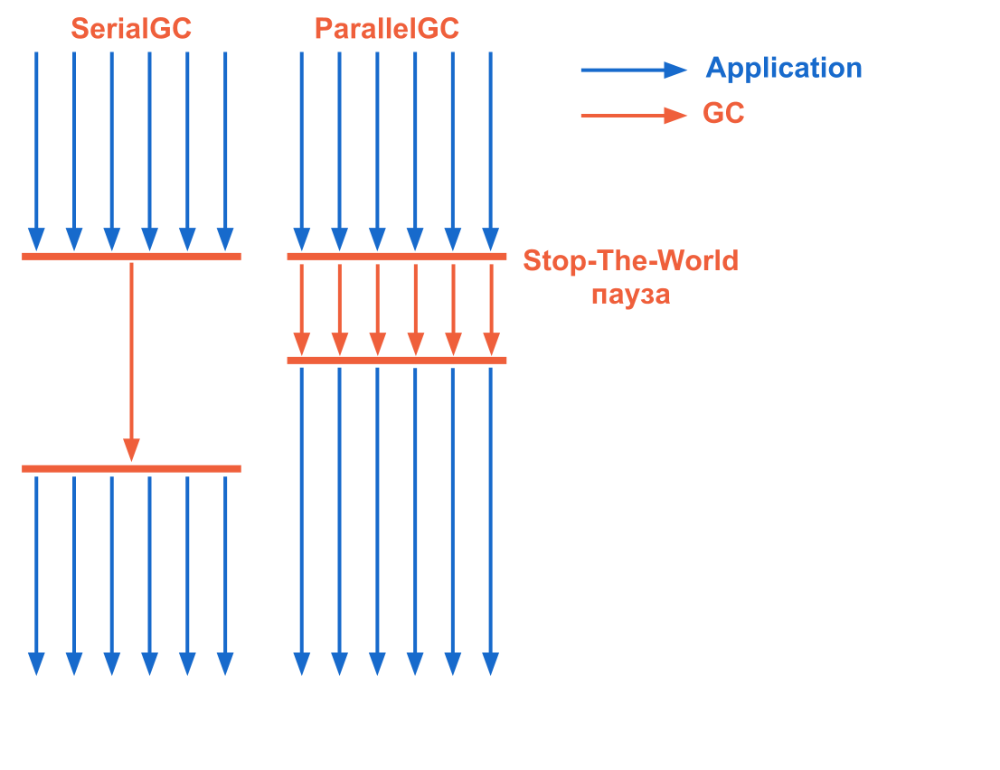
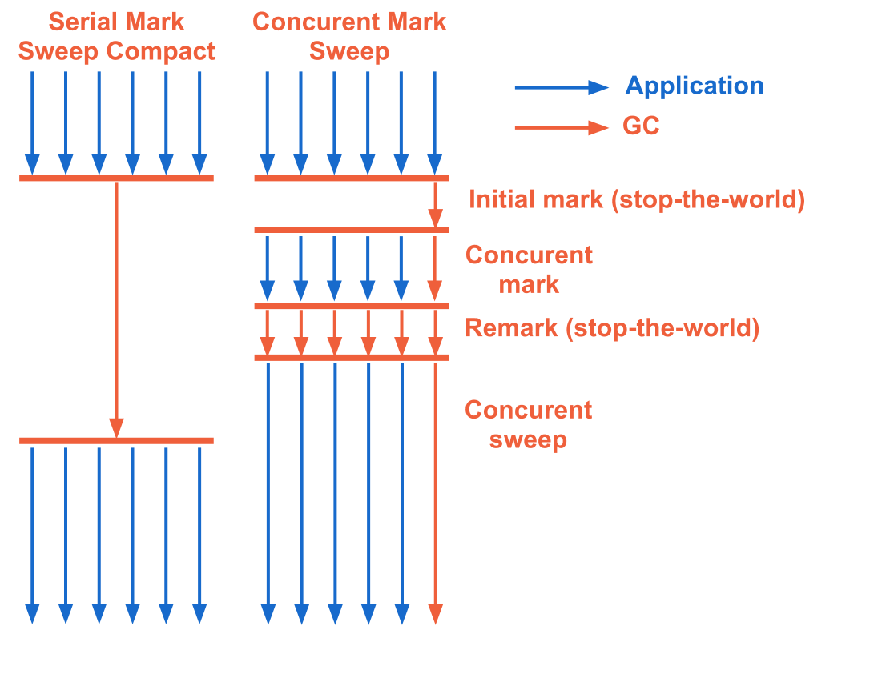
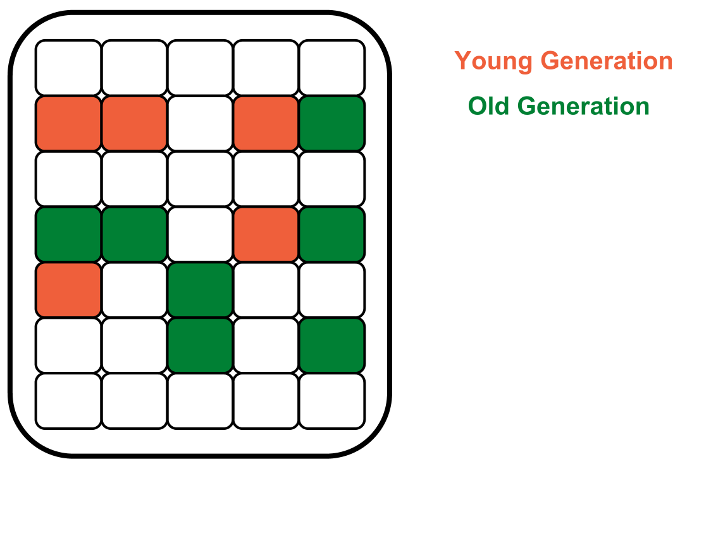
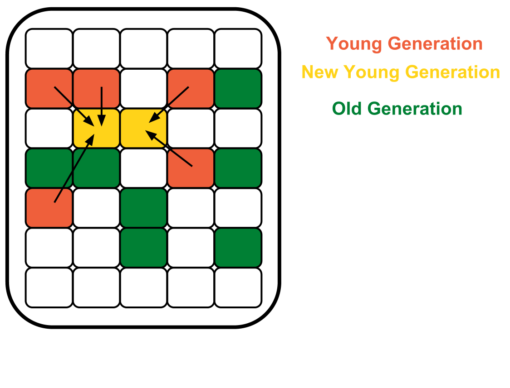
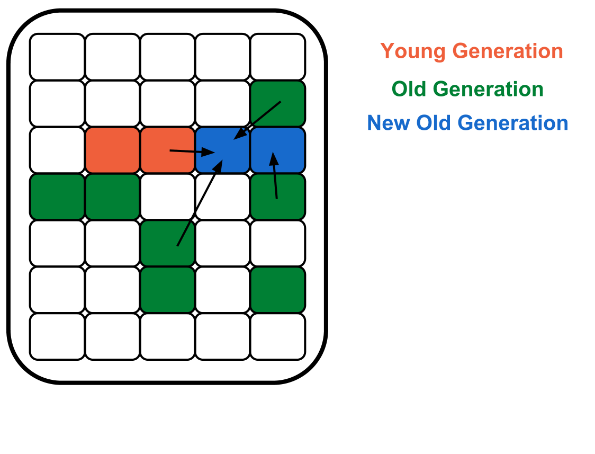

Garbage Collector
и управление памятью
в HotSpot JVM
Роман Золотарев
Алгоритмы сборки мусора в GC

Алгоритмы сборки мусора в GC
Основные алгоритмы сборки мусора в JDK6:
Экспериментальный начиная с v6u26:
SerialGC
Особенности
Флаг активации: -XX:+UseSerialGC
SerialGC, minor collection
SerialGC, minor collection
SerialGC, minor collection
SerialGC, minor collection
SerialGC, minor collection
SerialGC, FullGC (mark-sweep-compact)

SerialGC, FullGC (mark-sweep-compact)

SerialGC, FullGC (mark-sweep-compact)
В результате уплотнения
добавление нового объекта в OldGen происходит очень быстро (алгоритм bump-the-pointer)
SerialGC, выводы
Подходит для :
Недостатки:
ParallelGC
Особенности:
Включение: -XX:+UseParallelGC
Включение Parallel Compacting: -XX:+UseParallelOldGC
Колличество потоков: -XX:ParallelGCThreads=<n>
SerialGC vs ParallelGC

Parallel Compacting Collector
Marking phase
Summary phase
Compact phase
Parallel Compacting Collector
Parallel Compacting Collector оперирует регионами!
Рекомендован для использования при размере Heap более 4Gb
Concurrent Mark Sweep (CMS)
Особенности:
Включение: -XX:+UseConcMarkSweepGC
CMS, OldGen
initial mark
Короткая stop-the-world пауза
Поиск корневых ссылок на объекты(в стеке потоков приложения)
concurrent mark
Выполняется параллельно с приложением
Поиск достижимых объектов из корневых ссылок
remark
Короткая stop-the-world пауза
Окончательная перепроверка помеченных объектов
Выполняется в нескольких потоках
concurrent sweep
Удаление мусора в параллельном режиме
concurrent mark
remark
concurrent sweep
MSC vs CMS
CMS, необходимо учитывать
G1, большие надежды
Особенности:
G1, сборка мусора в YoungGen

G1, сборка мусора в YoungGen
Особенности:
G1, сборка мусора в YoungGen

G1, сборка мусора в OldGen
Особенности:
G1, сборка мусора в YoungGen

G1, предсказуемость
-XX:GCPauseIntervalMillis=500
G1, выводы
далее >